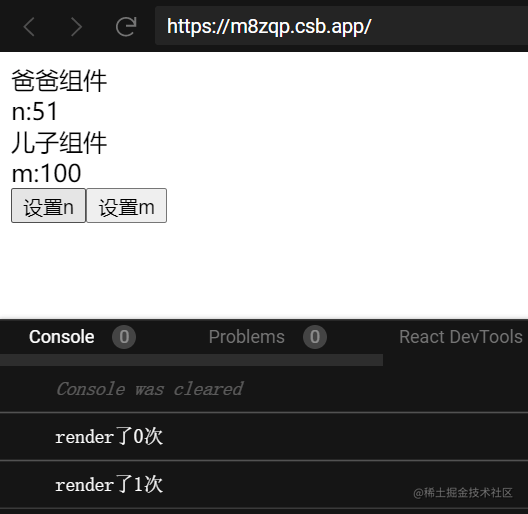

说说你对 useContext 的理解
参考答案
什么是Context
context（上下文）可以看成是扩大版的props，它可以将全局的数据通过provider接口传递value给局部的组件，让包围在provider中的局部组件可以获取到全局数据的读写接口
全局变量可以看成是全局的上下文
而上下文则是局部的全局变量，因为只有包围在provider中的局部组件才可以获取到这些全局变量的读写接口
用法
- 创建context
- 设置
provider并通过value接口传递state - 局部组件获取读写接口
案例理解
案例理解是最快的方式，我在下面的代码中，将设置一个父组件，一个子组件，通过useContext来传递state，并在子组件上设置一个按钮来改变全局state
import React, { createContext, useContext, useState } from \"react\";
const initialState = { m: 100, n: 50 }; // 定义初始state
const X = createContext(); // 创建Context
let a = 0;
export default function App() {
console.log(`render了${a}次`);//用来检查执行App函数多少次
const [state, setState] = useState(initialState); // 创建state读写接口
a += 1;
return (
<X.Provider value={{ state, setState }}> // 通过provider提供value给包围里内部组件，只有包围里的组件才有效
<Father></Father>
</X.Provider>
);
}
const Father = (props) => {
const { state, setState } = useContext(X);//拿到 名字为X的上下文的value，用两个变量来接收读写接口
const addN = () => {
setState((state) => {
return { ...state, n: state.n + 1 };
});
};
const addM = () => {
setState((state) => {
return { ...state, m: state.m + 1 };
});
};
return (
<div>
爸爸组件
<div>n:{state.n}</div>
<Child />
<button onClick={addN}>设置n</button>
<button onClick={addM}>设置m</button>
</div>
);
};
const Child = (props) => {
const { state } = useContext(X); // 读取state
return (
<div>
儿子组件
<div>m:{state.m}</div>
</div>
);
};拿到读写接口的组件就可以控制state数据

tips：注意到最上层的变量a没？这是我用来测试的，我发现点击按钮后会触发App函数并更新页面，说明react下使用context来修改数据的时候，都会重新进行全局执行，而不是数据响应式的。
总结
我们学习到Context上下文的基本概念和作用，并且通过小案例总结得出context的使用方法：
- 使用
creacteContext创建一个上下文 - 设置
provider并通过value接口传递state数据 - 局部组件从
value接口中传递的数据对象中获取读写接口
useContext 是 React Hooks 中的一个非常有用的 Hook,它为我们提供了一种在组件树中共享数据的方式。
useContext 的作用是:
- 跨组件共享数据
- 通过创建一个 Context 对象,我们可以在组件树的任何层级共享数据,而无需通过层层传递 props。
- 减少"prop drilling"
- 在组件层级较深的情况下,使用
useContext可以大大减少"prop drilling"的问题,即将 props 一级一级往下传递的问题。
useContext 的基本使用方式如下:
- 创建 Context 对象
``javascript<br> const MyContext = React.createContext(defaultValue);<br> ``
- 在组件树的某个层级提供 Context 值
``javascript<br> function ParentComponent() {<br> return (<br> <MyContext.Provider value={someValue}><br> <ChildComponent /><br> </MyContext.Provider><br> );<br> }<br> ``
- 在需要使用 Context 值的组件中使用
useContext
``javascript<br> function ChildComponent() {<br> const value = useContext(MyContext);<br> // 使用 value 进行渲染<br> }<br> ``
useContext 的常见使用场景包括:
- 主题配置
- 在应用中共享主题配置,如字体、颜色等。
- 身份验证状态
- 在应用中共享当前登录用户的信息。
- 应用全局状态
- 在应用中共享诸如语言设置、购物车等全局状态。
需要注意的是,useContext 虽然可以方便地跨组件共享数据,但也可能带来一些问题:
- 过度使用可能导致组件树过于耦合
- 过度依赖 Context 可能会让组件树过于耦合,降低组件的可复用性。
- 性能问题
- 如果 Context 的值频繁变化,可能会导致使用该 Context 的组件频繁re-render,影响性能。
因此,在使用 useContext 时,需要权衡利弊,只在确实需要跨组件共享数据的场景下使用。同时,也要注意合理地设计 Context 的粒度和生命周期,避免性能问题。